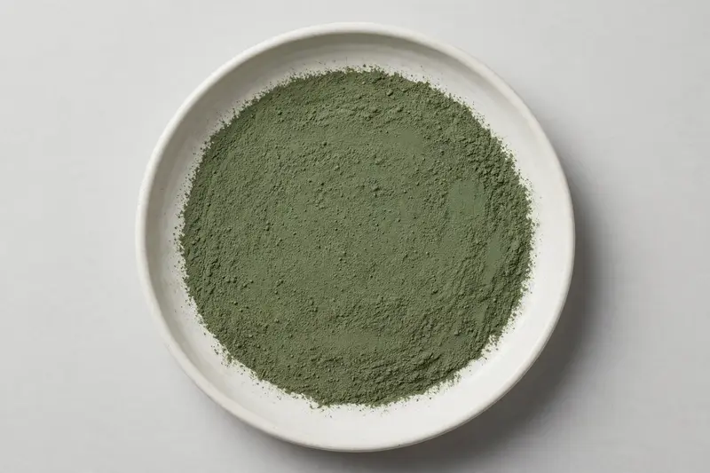

Papaya leaf — flavonoid and enzyme-adjacent botanical for digestive and wellness formulations.

Overview
Papaya leaf extract is derived from Carica papaya leaf and traded as a powder for digestive and general wellness formulations. Buyers commonly request flavonoid-related grades and enzyme-adjacent specifications linked to papain activity. Interest has grown alongside the botanical digestive segment. As a Xi'an-based trading company, we source through vetted partner producers — send your target spec and we confirm feasibility honestly.
Specifications below reflect commonly requested options in the market — not a stock list. Share your target spec and we'll confirm exactly what we can supply, honestly.
| Specification | Details |
|---|---|
| Botanical identity | Papaya leaf extract powder (Carica papaya leaf) |
| Marker compound | Commonly requested spec grades: flavonoid content and papain-adjacent enzyme activity formats — confirm against your target specification. |
| Appearance | Dark green fine powder |
| Mesh size | Typically 80–100 mesh (confirm per inquiry) |
| Testing | COA/TDS arranged on request; scope agreed per your spec |
Applications
Documentation
We don't claim in-house labs or certifications we don't hold. COA and TDS documents can be arranged on request, and testing scope is agreed against your specification before supply.
FAQ
Related products
Silybum marianum
Key marker: Silymarin
View specs →Ginkgo biloba
Key marker: Flavone Glycosides
View specs →Panax ginseng
Key marker: Ginsenosides
View specs →Psidium guajava
Key marker: Quercetin Content
View specs →Harpagophytum procumbens
Key marker: Harpagoside Content
View specs →Send your target spec and volumes — we'll respond with a tailored quotation.
Request a Quote